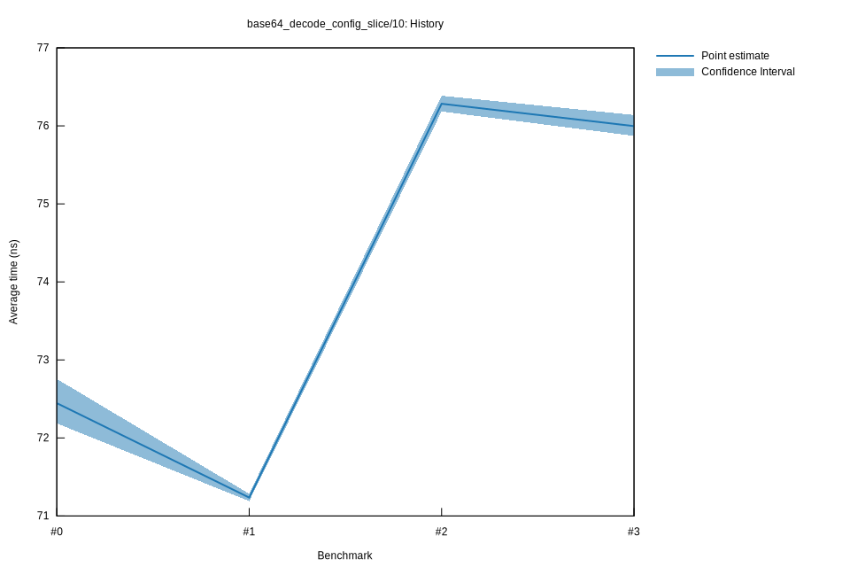

# 32022-10-15T17:17:15+03:00
|
Lower Bound |
Estimate |
Upper Bound |
| Value: |
75.87ns |
76.00ns |
76.14ns |
| Throughput: |
201.11MiB/s |
200.78MiB/s |
200.41MiB/s |
| Change in Value: |
-0.7521% |
-0.4742% |
-0.2256% |
| Change in Throughput: |
+0.7578% |
+0.4765% |
+0.2262% |
No change in performance detected.
# 22022-10-15T16:51:31+03:00
|
Lower Bound |
Estimate |
Upper Bound |
| Value: |
76.18ns |
76.28ns |
76.39ns |
| Throughput: |
200.29MiB/s |
200.03MiB/s |
199.76MiB/s |
| Change in Value: |
+6.7565% |
+7.0165% |
+7.2494% |
| Change in Throughput: |
-6.3289% |
-6.5564% |
-6.7594% |
No change in performance detected.
# 12022-10-08T17:28:15+03:00
|
Lower Bound |
Estimate |
Upper Bound |
| Value: |
71.19ns |
71.24ns |
71.28ns |
| Throughput: |
214.34MiB/s |
214.20MiB/s |
214.05MiB/s |
| Change in Value: |
-2.5497% |
-1.8840% |
-1.3528% |
| Change in Throughput: |
+2.6164% |
+1.9202% |
+1.3713% |
No change in performance detected.
# 02022-10-08T17:09:07+03:00
|
Lower Bound |
Estimate |
Upper Bound |
| Value: |
72.19ns |
72.45ns |
72.76ns |
| Throughput: |
211.38MiB/s |
210.62MiB/s |
209.72MiB/s |